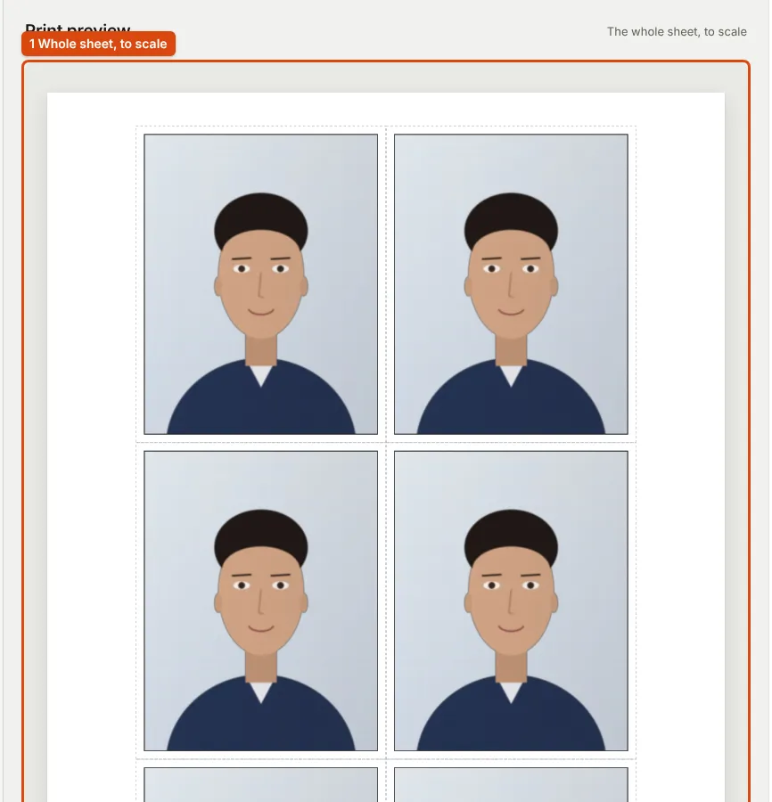

Passport Photo Print Sheet Maker: Tile Multiple Photos on 4×6 & A4
Repeat one photo at its true size on a 4×6 inch, 5×7 inch or A4 sheet at 300 DPI, with lines to cut along, and print it at a photo lab. The photo stays on your device.
Add your passport photo
Use a cropped, front-facing photo on a plain background.
JPG, PNG or WebP. Need to crop first? Use the image resizer. Your photo stays on this device.
Photo
Sheet
Cutting aids
How to print passport-size photos from one sheet
This tool is for the printed copies you paste on paper application forms, joining forms and ID applications. It repeats one photo at its true physical size on a 4 × 6 inch, 5 × 7 inch or A4 sheet at 300 DPI, with thin lines to cut along. For an online upload you need a single file instead: use the image resizer.
- Start with a cropped, front-facing photo on a plain background. The sheet uses the photo as it is, so crop first in the resizer if the face is off-centre; our guide to taking a passport-style photo at home covers light and background.
- Choose the photo size and paper. The 3.5 × 4.5 cm size matches the size the Passport Seva instructions give for pasted photos: "4.5 cm length x 3.5 cm width" in colour on a plain white background (Instructions for filling the passport application form).
- Download the JPEG or the PDF and take it to a photo lab, or print it yourself on photo paper.
- Print at 100% scale. Turn off "Fit to page" or "Scale to fit"; otherwise every photo shrinks and the size no longer matches.

What the sheets look like in practice
We made sheets from the test portrait in our sample images (1200 × 1600 px, 428.9 KB) with the 3.5 × 4.5 cm size and standard spacing:

| Paper | Copies | Sheet in pixels (300 DPI) | JPEG size | PDF size |
|---|---|---|---|---|
| 4 × 6 inch | 6 | 1200 × 1800 | 312.9 KB | 313.6 KB |
| 5 × 7 inch | 9 | 1500 × 2100 | 461.4 KB | 462.1 KB |
| A4 | 30 | 2480 × 3508 | 1.47 MB | 1.47 MB |
A 4 × 6 inch sheet at 300 DPI is exactly 1200 × 1800 pixels, so a lab prints it without resampling.
Common mistakes
- Printing with "Fit to page". The commonest reason copies come out the wrong size. Print at 100% and measure one photo with a ruler.
- Printing on plain paper with an office printer. The Passport Seva instructions say "Photograph in computer print will not be accepted". Use photo paper for anything official.
- Starting from a low-resolution photo. A 35 × 45 mm print at 300 DPI needs about 413 × 531 pixels of face and shoulders; a small crop from a group photo looks soft. The same instructions add that photos cut from group photographs are not acceptable.
- Choosing the wrong preset. Visa sizes differ; check the embassy's own rules before printing.
When not to use this tool
- Passport applications at a Passport Seva Kendra. The same Passport Seva instructions say a photograph is "NOT REQUIRED for applications submitted at Passport Seva Kendra (PSK), Post Office Passport Seva Kendra (POPSK)"; it is taken there.
- Online uploads. A portal wants one photo file with its own pixel and KB limits; a sheet of copies will be rejected.
- Prints with special rules. Some forms ask for a different size, such as a postcard-size (4 × 6 inch) photo or a stamp-size photo. Follow the size printed on that form; the sheet maker's presets cover common passport and visa sizes only.
Frequently Asked Questions
How many passport photos fit on one sheet?
At 3.5 × 4.5 cm with standard spacing, the tool fits 6 copies on 4 × 6 inch paper, 9 on 5 × 7 inch paper and 30 on an A4 sheet. You can also choose a fixed number of copies.
What size is an Indian passport photo?
For photos pasted on paper passport forms, the Passport Seva instructions give 4.5 cm length x 3.5 cm width, in colour, on a plain white background. For applications at a Passport Seva Kendra the photo is taken there and you do not bring one.
Does the sheet print at the real size?
Yes, if you print at 100% scale. The sheet is drawn at 300 DPI, so a 4 × 6 inch sheet is 1200 × 1800 pixels. Turn off Fit to page or Scale to fit in the print dialog, then measure one photo with a ruler.
Should I print the JPEG or the PDF?
Photo labs usually take the JPEG. The PDF carries the same image at the paper size, which helps with home printers that ignore the image's DPI.
Can I print the sheet on plain paper at home?
For practice or informal use, yes. For official forms, print on photo paper: the Passport Seva instructions say a photograph in computer print will not be accepted, and many forms ask for a photographic print.
Is my photo uploaded anywhere?
No. The sheet is drawn in your browser on your device and the photo is not sent to ApplyReady or anyone else.